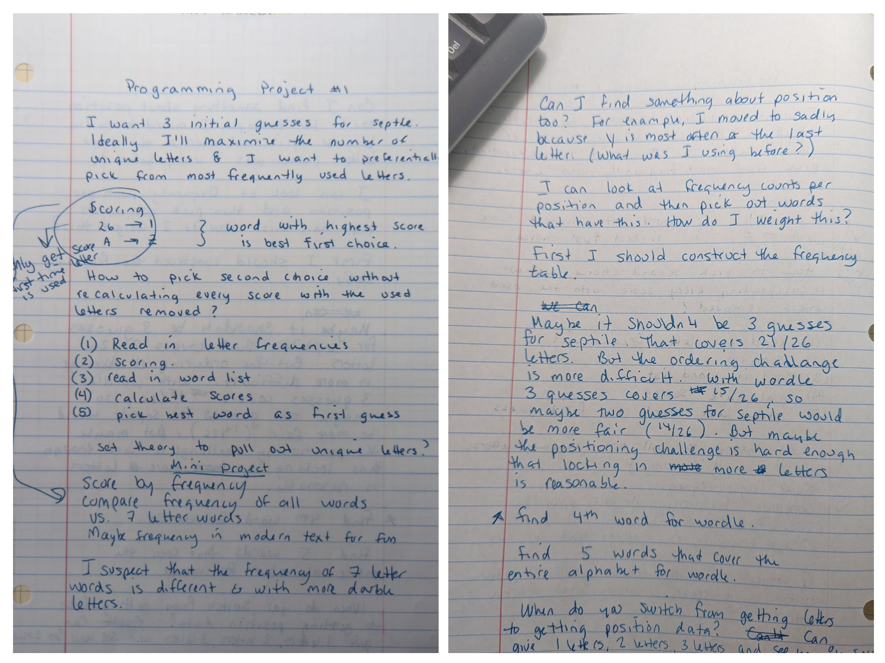
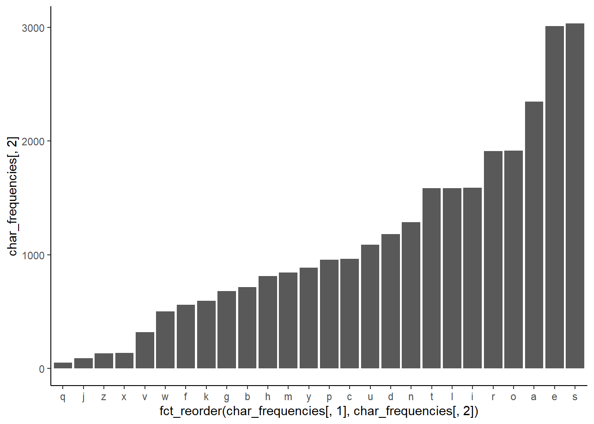
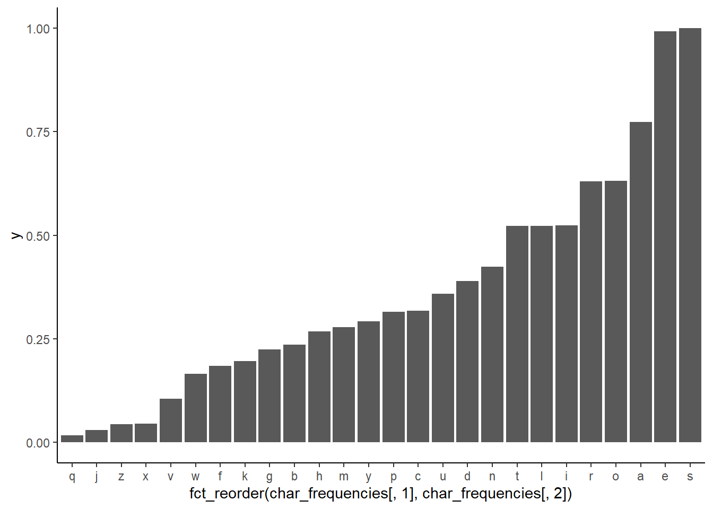

library(tidyverse)
sgb.words <-
read.delim("C:/Users/drsin/OneDrive/Documents/R Projects/wordle/sgb-words.txt",
sep = "")
#probably want this instead because it assumes no headers
#test6 <- read.table(file.choose())
Scoring_Word <- function(word){
#i'm not handling duplicate letters at all right now
letter_vec <- unlist(strsplit(word, split = ""))
value <- 0
for (i in 1:5) {
position <- letter_vec[i] == char_frequencies$letters
value[i] <- y[position]
# print(i)
if (i == 5) {
# print("I am here")
# print(sum(value))
return(total <- sum(value))
}
}
}
Scoring_Word_Unique <- function(word){
# print(word)
letter_vec <- unlist(strsplit(word, split = ""))
unique_letter_vec <- unique(letter_vec)
#print(unique_letter_vec)
#print(length(unique_letter_vec))
value <- 0
if (length(unique_letter_vec) == 0) {
return(value)
} else{
for (i in 1:length(unique_letter_vec)) {
position <- unique_letter_vec[i] == char_frequencies$letters
value[i] <- y[position]
# print(i)
# print(value)
if (i == length(unique_letter_vec)) {
# print("I am here")
# print(sum(value))
return(total <- sum(value))
}
}
}
}Self-Guided Learning through a Wordle Guess Generator: Part 1
R
R-code
Skills improvement with a Wordle Guess Generator
Self-Guided Learning: The Ever Evolving Wordle Guess Generator
The best way to learn a programming language is to code. Obvious, but sometimes it can be daunting to start a project when you are a novice. Influenced by my time at a start-up, I’ve found the best approach is to create a minimum viable product. This is the smallest working part of the project. By continuing to revise and iterate the code, you can rapidly detect weaknesses in your knowledge and take active steps to fix them.
My learning project was a Wordle Guess Generator. I will show you how I used this project to create a self-guided learning plan. Motivated partly by my desire to have good guesses for Septle (a seven-letter guessing game), this project has been a crucial part of my journey to learn R. Practicing and learning coding skills were more important to me than devising the optimal strategy; if you are interested in “the best” Wordle strategy, then you will probably find much better answers by Googling.
For those who don’t know, Wordle is a word-guessing gamer that gives you five guesses to identify a 5-letter word. Correct letters are shown in green or yellow with each guess, depending on whether they are appropriately placed or not. Incorrect letters are shown in gray.
I wasn’t interested in coming up with the global “best” answer. I wanted to come up with some guesses that fit my gameplay style. I guess three words in a row without trying to solve the game. Then, with a fair number of letters known, I attempt to solve the word.
The code has undergone several significant overhauls as I’ve needed to learn new things and used this project as the test bed. And here it is again, as a vehicle to learn quarto/ markdown. Here I will show you the very first ugly code and how I critiqued and revised it over several months. I’ve put it all on GitHub. The project is unstructured, the code is ugly, and all the versioning was by filename.
1. Brainstorming the project.
Brainstorm what you want this project to do. Try to have a very clear statement about the project’s goal at the top. If you can think of self-contained modules, mark that. If you can sketch out the scaffold of the code- great! If you have some ideas about the results, even better. Put everything you can think of down. I had been thinking about this project for a while, so this brainstorming sheet is neat. Neatness and organization are not important at this point; getting stuff written down is.
My goal was “I want 3 initial guesses for Septle. Ideally, I’ll maximize the number of unique letters, and I want to preferentially pick from the most frequently used letters.”
I decided my scoring would be based on the frequency letters occur in English; more common letters get a higher score than uncommon letters. To generate the score for the word, I proposed the following process:
- Read in letter frequencies
- Scoring [the letters, originally I thought it would be based on rank, with the most common letter getting a 26 and the least common getting a 1. That is what the confusing little sketch is attempting to convey. A is not the most common letter, nor is Z the least common.]
- Read in the list of words
- Calculate the scores [of the words]
- Pick the best word as a first guess [best meaning highest scoring]
I also talk about how the frequency distribution of letters will likely differ between five and seven-letter words. I suggested looking at the frequency of letters in modern text instead of just frequency lists from linguists. I noted that certain letters are more likely to be in a specific position, and it could be valuable to constrain the guess to typical positions. An example is that “y” is almost always at the end of a word in English, so “sadly” might be a better guess than “yacht” for that reason. You are likelier to lock down a letter with a positionally accurate guess. I also said that I wanted a 4th Wordle guess. There are a lot of ideas here! That’s okay because I winnow them down in the next step.

2. Minimum Viable Product: What is the smallest program that works?
Pull out the minimum viable product from your brainstorming. What is the smallest result that would satisfy your goals? Is there a way to make things a bit smaller? I would size it so you can get working code to accomplish the goal in a few hours.
I chose to generate four guesses for Wordle. I also decided to generate my frequency table from the word list itself. I found a five-letter word list that I could download and read in, but all the letter frequency tables I found were on blogs or in articles, and the only way I could see to get them into my program was to type them in and I was too lazy to do that. I decided to implement the process I outlined in the brainstorming session and calculate four guesses.
3. Write some bad code.
Write some code that does that thing. It will be ugly. If you can’t figure something out, do it the wrong way. Just get something running.
This first attempt took me 3-4 hours to write.
I googled how to calculate the frequency of letters in words (in R) and found this helpful tutorial.
The Minimal Viable Product: Running Code
I cleaned up the commenting/formatting of the initial code just for this post. I also added library(tidyverse)- apparently, I was just loading libraries through the gui back then. If you want to see the true initial version, it is on GitHub.
Here’s what my MVP does:
I found a list of five letter words online and imported it.
I calculated how often each letter occurred over the word list.
(This, or the scaled version, was the score assigned to each letter.)I looped through the word list and calculated two scores for each word, one using all letters and one using only the unique letters.
I picked the highest-scoring word as my first guess.
I then went through the word list and calculated a second score for the words minus the letters already guessed in the first guess (and ignoring duplicated letters).
I picked the highest-scoring word as my second guess.
I repeated steps 5 & 6 to pick a third guess.
Okay, so let’s look at some bad code. I will flag a few things as we go through, but I’m certain you can find much more that is not optimal.
Here’s loading the data and writing two scoring functions. I first wrote these in the code but had time to convert them to functions in this initial work session. It was an opportunity to practice function writing, but it was not critical to the minimum viable product.
I have lots of print statements commented out; this is a very simple way to debug and see how you are proceeding through the code. There are more sophisticated tools in R Studio, but I didn’t want to figure out how to use them at this moment. I use the global variable char_frequencies for the value of each letter. I create this variable in the next code chunk.
I did run through most of the code with five words initially, and then later the whole word list, when I was more confident that things worked.
I calculate how often each letter appears in the list and create the scaled version. I created two incredibly ugly graphs: one of the raw counts for each letter and one of the scaled frequencies. This is also a moment to do a quick reality check on the results- are the most and least common letters what you’d expect?
start_time <- Sys.time()
letters <- unlist(strsplit(sgb.words[,1], split = ""))
char_frequencies <- as.data.frame(table(letters))
#char_frequencies
ggplot(char_frequencies,
aes(x = fct_reorder(char_frequencies[,1], char_frequencies[,2])
, char_frequencies[,2] )) +
geom_col() +
theme_classic()
common <- max(char_frequencies[,2])
y = (char_frequencies[,2]/common)
ggplot(char_frequencies,
aes(x = fct_reorder(char_frequencies[,1], char_frequencies[,2]), y )) +
geom_col() +
theme_classic()
Now I calculate the scores for the (hand-picked) words I’ve been playing with. I also hand-calculated these scores using the values from char_frequencies to ensure my scoring functions did what I thought they were.
I initialized an object to store the words, scores, and guesses. You can also tell that I had no idea what data types my objects were since I called them a list. small_list is a matrix/array of characters, and none of my zeros are numbers. I wanted a dataframe, but I didn’t know how to do that. I didn’t have a strong reason to prefer a dataframe other than it was widely used in the courses I was taking at Datacamp.
This chunk also pulls out a single word and sends it to score to check that it works before I loop through the entire object and calculate all the scores.
You can also see I hard-coded the number of words (again… I did this in the prior code chunk too.)
#calculate the score for crone
crone_score <- Scoring_Word("crone")
#might_score <- Scoring_Word ("might")
#sadly_score <- Scoring_Word ("sadly")
num_words <- 5756
#num_words <- 5
small_list <- cbind(word_name = sgb.words[1:num_words,1],
score =rep(0, times = num_words),
unique_score = rep(0, times = num_words),
post_word_one_unique = rep(0, times = num_words),
post_word_two_unique = rep(0, times = num_words),
post_word_three_unique = rep(0, times = num_words)
)
word <- small_list[[1,1]]
Scoring_Word(word)[1] 3.40422ind2 <- 0
for (ind2 in 1:num_words){
#print(small_list[[ind2,1]])
score_ind2 <- Scoring_Word(small_list[[ind2,1]])
small_list[[ind2,2]] <- score_ind2
}
#u_crone_score <- Scoring_Word_Unique("crone")
#u_there_core <- Scoring_Word_Unique ("there")
#sadly_score <- Scoring_Word ("sadly")
ind2 <- 0
for (ind2 in 1:num_words){
# print(small_list[[ind2,1]])
score_ind2 <- Scoring_Word_Unique(small_list[[ind2,1]])
# print(score_ind2)
small_list[[ind2,3]] <- score_ind2
}In my attempt to sort the word scores and pick out the highest-scoring works, I created an unnecessary number of temporary variables. I forced one of these objects to be a dataframe, but I didn’t check the types of the individual components. Note that all my numbers are still characters. It is funny that things worked even though they were the wrong type.
small_list1 <- small_list
small_df <- as.data.frame(small_list1)
top_words <- small_df %>%
arrange(desc(unique_score))
word_1 <- top_words$word_name[1]Now I calculate the second and third guesses. I wanted to penalize duplicate letters, so I used the unique letter scoring function and removed the letters from the first guess. I couldn’t figure out how to do that automatically, so I hardcoded to remove the letters “a”, “r”, “o”, “s”, and “e” from the words before I sent them to be scored. This is precisely the kind of situation where you can get bogged down doing things “properly” and end up stuck. I quickly attempted to figure it out and then did it incorrectly. You can also see that I have a bunch of stuff commented out that didn’t work and a bunch of print statements for debugging. This is not pretty code.
Then I loop through the list again and repeat for the last guess. Again, hardcoded in the letters to remove from the first and second guesses.
#now we need a function that sees if a word has the letters of the word_1
#and removes them and then calculates the word score
#top word is arose
# Word 1= arose -----
ind3 <- 1
for (ind3 in 1:num_words) {
# print(top_words$word_name[ind3])
test <- small_list[[ind3,1]]
lvec <- gsub("[a r o s e]", "", test) #this actually works. How do I use the string?
#lvec <- unlist(strsplit(word_1, split = ""))
#lvec<- "t|h|e|i|r" #how do I contruct this automatically
#new_let <- str_remove_all(pattern= lvec, string= test)
# print(lvec)
score_ind3 <- Scoring_Word_Unique(lvec)
# print("writing score")
# print(c(ind3, " ", score_ind3, "for the word ", test, "sent as ", lvec))
small_list[[ind3,4]] <- score_ind3
#print (c("output of small list ", top_words[[ind3,4]]))
}
small_df2 <- as.data.frame(small_list)
top_words2 <- small_df2 %>%
arrange(desc(post_word_one_unique))
word_2 <- top_words2$word_name[1]
# top word 2 is until
ind4 <- 1
for (ind4 in 1:num_words) {
# print(top_words$word_name[ind3])
test <- small_list[[ind4,1]]
lvec <- gsub("[u n t i l a r o s e]", "", test) #this actually works. How do I use the string?
#lvec <- unlist(strsplit(word_1, split = ""))
#lvec<- "t|h|e|i|r" #how do I contruct this automatically
#new_let <- str_remove_all(pattern= lvec, string= test)
# print(lvec)
score_ind4 <- Scoring_Word_Unique(lvec)
# print("writing score")
# print(c(ind3, " ", score_ind3, "for the word ", test, "sent as ", lvec))
end_time <- Sys.time()
end_time - start_time
small_list[[ind4,5]] <- score_ind4
#print (c("output of small list ", top_words[[ind3,4]]))
}
small_df3<- as.data.frame(small_list)
top_words2 <- small_df3 %>%
arrange(desc(post_word_two_unique))
word_3 <- top_words2$word_name[1]Lastly, I calculated the total score of these three words compared to my hand-picked words.
a = Scoring_Word_Unique("arose") +
Scoring_Word_Unique("until") +
Scoring_Word_Unique("dumpy")
a[1] 8.013518b = Scoring_Word_Unique("crone") +
Scoring_Word_Unique("mighty") +
Scoring_Word_Unique("sadly")
b[1] 8.081767Note that there is an error here too. By calling Scoring_Words_Unique on individual words, I did not penalize duplicate letters. Thus “u” appears in two words. The correct scoring call should have been:
c = Scoring_Word_Unique("aroseuntildumpy")
c[1] 7.654468But the program works! It generated three reasonable guesses for Wordle that use common letters. (Note that by my scoring rules, the manually chosen set of words is a better choice.)
4. Critique the code
This step is the critical step to accelerate your learning. You need to review your code and list everything you know is not done properly and everything confusing you. This should be done at the end of every session or at the start of the next. Be honest with yourself. If you don’t understand something, put it on your list, even if your code works. The point of this exercise is to increase your coding proficiency.
This is my list from that code we just reviewed. I created this the next day before I started work. Note my versioning by file name.
- Save current code as frequency_072222 and work on a new copy. This was functional code last night, so I want to keep it.
- Import is wrong because it takes the first word as a header.
- I need more concise variable names. Also, I create a bunch of temp variables that aren’t needed.
- I manually subtract out (hard-coded) words picked in previous cycles. I need that done on the fly.
- Once 4 is done, I’d like to write a function to generate however many guesses you ask for.
- I’d like to look at the histogram of the scores as you cycle through the guesses.
- I’m very unclear on when I need lists, dataframes, tibbles, etc., for the different functions.
- Give credit to the website where I took the string split code from.
- Some functions from the other code are out of date, so I should update them. [I got warnings in R Studio about this, which I didn’t understand.]
- Update scoring_word to have flexible word length.
Again, there is a lot more wrong with this code, but this is the list of things I could identify with the knowledge I had at the time.
The next day, I created a chart of all my variables, their sizes, and their types. I also proposed new, clearer names for them, though this wasn’t implemented until a few days later. I mostly played around with how long it took to calculate the initial score and unique score using separate or combined loops. I used sys.time() to benchmark, which didn’t seem terribly consistent in its output. However, there didn’t seem to be a huge difference between the methods, so I returned it to two loops for clarity. At the end of this day, I had four items on my task list after critiquing and reviewing. The last one was, “I need to figure out git_hub or come up with a better way of versioning than the date.”
Proving that point, I put the wrong date in all the file names the next time I worked on the code. In that session, I devoted most of the time to figuring out item 4 on my task list. I wrote a function called remove_letters, which could be used instead of hard coding. I also played around with reshaping the data using pivot_longer from tidyr. I created a histogram of word scores as letters are removed from consideration, which required the reshaped data. Reshaping data can be tricky, so this was a good opportunity to work through that process. (Again, versioning by name, this was called “frequency_072422_tidyr”, in case I really messed up.)
Current Status
When I set-up git/ GitHub, I created a new project using the structure for folders and subfolders that I learned in a class at Datacamp. This project is also a work in progress, so it is also messy. I’ve run through it here as a blog post and the code is available on GitHub.
Citation
BibTeX citation:
@online{sinks2023,
author = {Sinks, Louise E.},
title = {Self-Guided {Learning} Through a {Wordle} {Guess}
{Generator:} {Part} 1},
date = {2023-04-01},
url = {https://lsinks.github.io/posts/2023-04-01-self-guided-learning-wordle-guesser-part-1/Wordle.html},
langid = {en}
}
For attribution, please cite this work as:
Sinks, Louise E. 2023. “Self-Guided Learning Through a Wordle
Guess Generator: Part 1.” April 1, 2023. https://lsinks.github.io/posts/2023-04-01-self-guided-learning-wordle-guesser-part-1/Wordle.html.